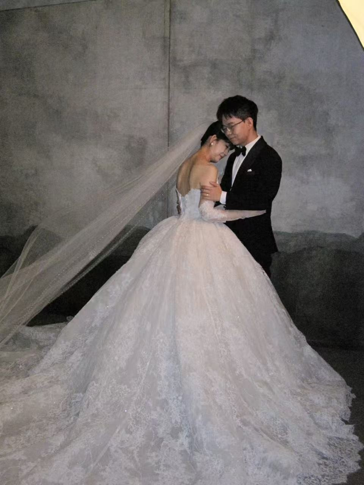

✦ 张智霖 ❤ 陈奕彤 ✦
婚礼邀请函

春风化雨，四季流转；因缘际会，我们携手相知。
时光深处，爱意恒长；在亲友的见证下，我们即将许下誓言。
诚邀您拨冗莅临，与我们共享这份喜悦与感动。
愿欢声笑语，伴随这一天永恒铭记。
2025年9月20日
辛丑年八月廿九 · 金秋吉日
11:30 仪式
交换誓言与戒指，愿此心此情，岁岁年年。
西安西咸诺富特酒店 · 金湾厅
我们真诚期盼您的到来，
让欢聚与祝福成为这一天最温暖的注脚。
点击导航
※ 已使用 腾讯地图直达链接，在微信中点击可直接打开定位；无需公众号签名。